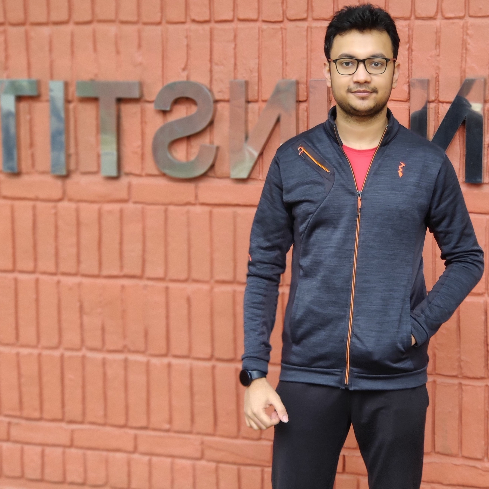
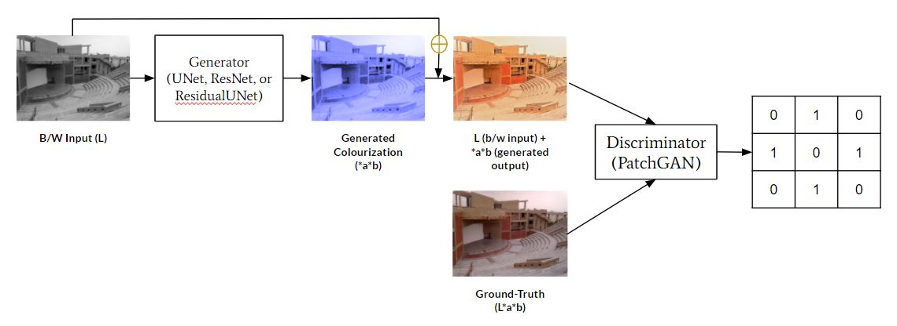
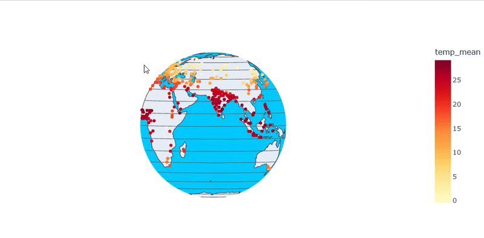
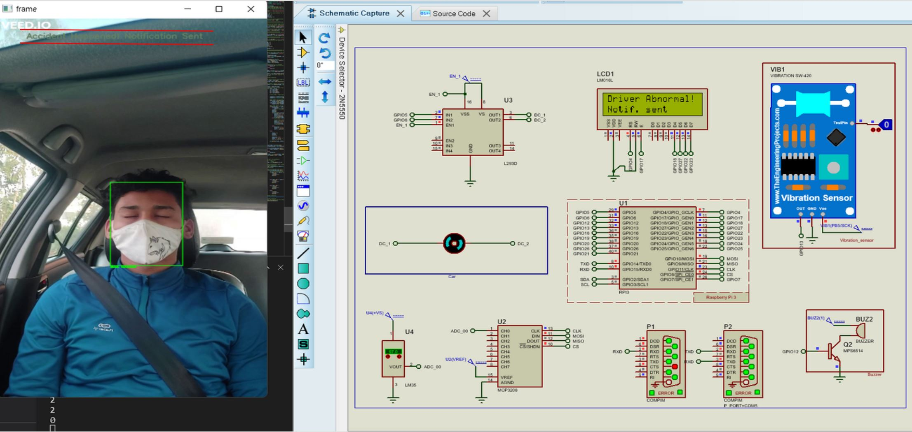

About
I'm a first-year MS (By Research) student in the Computer Science and Engineering department at Indian Institute of Technology, Kanpur. My interests are broadly machine learning, especially research in computer vision. I'm currently working under the guidance of Prof. Gaurav Sharma for my thesis.
Prior to joining Indian Institute of Technology, Kanpur, I completed my BTech (Bachelor of Technology) in Computer Science and Engineering from Pranveer Singh Institute of Technology, Kanpur.
Research Interests
Machine Learning
Computer Vision
Probabilistic ML

Skills
Resume
Summary
Shivam Tripathi
First year MS (By Research) student working with Prof. Gaurav Sharma in computer vision research. My research interests are machine learning and computer vision research. I want to build an academic career in the similar domain.
Education
MS (By Research) in Computer Science and Engineering
2021 - 2024 (Expected)
Indian Institute of Technology, Kanpur
Current CPI: 9.5/10
Bachelor of Technology in Computer Science and Engineering
2016 - 2020
Pranveer Singh Institute of Technology, Kanpur
(Dr. A. P. J. Abdul Kalam Technical University, Uttar Pradesh)
First Division With Honours
CGPA: 7.66/10
Experience
Research Intern
June 2018 - Sep 2019
Indian Statistical Institute, Kolkata
- Studied and implemented self-organizing maps (SOM) and read various research papers related to unsupervised feature selection
- Research work focused on the problem of feature selection and a way to use self-organizing maps (SOM) for visualizing reduced data.
Jan 2019 - March 2019
Indian Statistical Institute, Kolkata
- Research work focused on manifold learning for data visualization.
- Studied and implemented t-SNE and a few variations of the algorithm
- Studied and implemented various research papers related to autoencoder based algorithms for manifold learning
Projects
The following projects were done as a part of courses done during my first year.
Colorization using Conditional-GAN
Course: CS776A Deep Learning for Computer Vision
Feb 2022 - Apr 2022
Building on the existing ‘pix2pix’ image-to-image translation model, we have performed several experiments to improve the colorization quality and build a colorization-specific framework. View Report

Climate Change Analysis
Course: CS685A Data Mining
Aug 2021 - Nov 2021
We analyze the common factors that cause climate change and draw useful inference from the data. The major factors include the emission of harmful geenhouse gases, rise in temperature of the earth’s surface, warming up of oceans, melting of glacier, rise in sea level, and how these factors lead to the increase in occurrence of climate anomalies and causes natural disasters. View Report

SAFE Vehicle System using IoT
Course: CS698T Introduction To Internet Of Things And Its Industrial Applications
Aug 2021 - Nov 2021
The SAFE Vehicle system is an IoT based application that includes various functionalities like Drowsiness detection, driver temperature monitoring, face mask detection which is crucial in times of COVID-19 and seat belt fasten detection, alerting the driver if any detector detects the negligence, and also notifying the family members and rescue authorities if some mishap has happened despite all the safety measures with location and intensity of the accident. View Report

Coursework
Following is the list of courses completed as a part of MS (By Research):
| S.No. | Course Code | Course Name | Instructor | Credits | Grade |
|---|---|---|---|---|---|
| 1 | CS771A | Introduction To Machine Learning | Prof. Nisheeth Srivastava | 9 | A |
| 2 | CS685A | Data Mining | Prof. Arnab Bhattacharya | 9 | A |
| 3 | CS698T | Introduction To Internet Of Things And Its Industrial Applications | Prof. Priyanka Bagade | 9 | B |
| 4 | CS776A | Deep Learning For Computer Vision | Prof. Priyanka Bagade | 9 | A |
| CPI: | 9.5/10 |